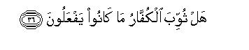

بسم الله الرحمن الرحيم
Sayyid Abul Ala Maududi - Tafhim al-Qur'an - The Meaning of the Qur'an
 83.
Surah Al Mutaffifin (Those Who Deal in Fraud)
83.
Surah Al Mutaffifin (Those Who Deal in Fraud)
It is derived from the very first verse; Wayl-ul-lil mutaffifin.
The style of the Surah and its subject matter clearly show that it was revealed in the earliest stage at Makkah, when surah after surah was being revealed to impress the doctrine of the Hereafter on the people's minds. This Surah was revealed when they had started ridiculing the Muslims and disgracing them publicly in the streets and in their assemblies, but persecution and manhandling of the Muslims had not yet started. Some commentators regard this as a Madani Surah. This misunderstanding has been caused by a tradition from Ibn Abbas according to which when the Holy Prophet (upon whom be peace) arrived in Madinah, the evil of giving short weight and measure was widespread among the people there. Then Allah sent down Wayl ul-lil mutaffifin and the people began to give full weight and measure. (Nasa'i, Ibn Majah, Ibn Marduyah, Ibn Jarir, Baihaqi: Shu`ab-il-Iman) But, as we have explained in the introduction to Surah Ad-Dahr, the common practice with the Companions and their successors was that when they found that a verse applied to a certain matter of life, they would say that it had been sent down concerning that particular matter. Therefore, what is proved by the tradition of Ibn Abbas is that when after his emigration to Madinah the Holy Prophet (upon whom be peace) saw that the evil was widespread among the people there, he recited this Surah before them by Allah's Command and this helped them mend their ways.
The theme of this Surah too is the Hereafter. In the first six verses the people have been taken to task for the prevalent evil practice in their commercial dealings. When they had to receive their due from others, they demanded that it be given in full, but when they had to measure or weigh for others, they would give less than what was due. Taking this one evil as an example out of countless evils prevalent in society, it has been said that it is an inevitable result of the heedlessness of the Hereafter. Unless the people realized that one day they would have to appear before God and account for each single act they performed in the world, it was not possible that they would adopt piety and righteousness in their daily affairs. Even if a person might practice honesty in some of his less important dealings in view of "honesty is the best policy," he would never practice honesty on occasions when dishonesty would seem to be "the best policy". Man can develop true and enduring honesty only when he fears God and sincerely believes in the Hereafter, for then he would regard honesty not merely as "a policy" but as "a duty" and obligation, and his being constant in it, or otherwise, would not be dependent on its being useful or useless in the world.
Thus, after making explicit the relation between morality and the doctrine of the Hereafter in an effective and impressive way, in vv. 7-17, it has been said: The deeds of the wicked are already being recorded in the black list of the culprits, and in the Hereafter they will meet with utter ruin. Then in vv. 18-28, the best end of the virtuous has been described and it has been laid that their deeds are being recorded in the list of the exalted people, on which are appointed the angels nearest to Allah.
In conclusion, the believers have been consoled, and the disbelievers warned, as if to say: "The people who are disgracing and humiliating the believers today, are culprits who, on the Resurrection Day, will meet with a most evil end in consequence of their conduct, and these very believers will feel comforted when they see their fate."

In the name of Allah, the Compassionate, the Merciful.
[1-6] Woe to those who give short weight,1 who, when they take by measure from others, take it fully, and when they measure or weigh for them, they give them less than what is due.2 Do they not think that they will be raised up again on a Great Day?3 The Day when all mankind shall stand before the Lord of the worlds.
[7-17] Indeed not!4 Surely the records of the wicked are in the Prison Register5 and what do you know what the Prison Register is? It is a written book. Woe on that Day to the beliers who belie the Day of Recompense, and none belies it but every sinful transgressor. When Our Revelations are recited to him,6 he says: "These are tales of the ancient times." By no means! But the fact is that their evil deeds have stained their hearts.7 By no means! Surely on that Day they shall be debarred from their Lord's vision.8 Then they shall enter Hell. Then it will be said to them, "This is the very thing you used to belie."
[18-28] Indeed not!9 Surely the record of the righteous is in the Register of the exalted ones. And do you know what is the Register of the exalted ones? It is a written book, guarded by the angels nearest to Allah. Surely the righteous shall be in bliss; seated on high couches they shall be looking around. In their faces you shall mark the glow of bliss. They shall be given to drink the choicest, sealed wine whose seal shall be musk.10 Those who wish to excel others, let them endeavor to excel in this. That wine shall have the mixture of Tasnim.11 This is a fountain with the waters of which those nearest to Allah shall drink wine.


[29-36] The culprits used to laugh at the believers in the world. They would wink at one another when they passed by them. When they returned to their kinsfolk they returned jesting.12 And when they saw them, they would say, "These are the people gone astray,"13 although they had not been sent to be guardians over them.14 Today the believers are laughing at the disbelievers, as they recline on couches and gaze at them. Have not the disbelievers been duly rewarded for what they used to do?15
1In the original the word mutaffifin has been used, which is derived from tatfif, a word used for an inferior and base thing in Arabic. Terminologically, tatfif is used for giving short weight and short measure fraudulently, for the person who acts thus while measuring or weighing, does not defraud another by any substantial amount, but skimps small amounts from what is due to every customer cleverly, and the poor customer does not know of what and of how much he is being deprived by the seller.
2At several places in the Qur'an giving of short measure and weight has been condemned and measuring fully and weighing rightly has been stressed. In Surah Al-An'am, it has been enjoined: "You should use a full measure and a just balance. We charge one only with that much responsibility that one can bear." (v. 152). In Surah Bani Isra'il it has been said: "Give full measure when you measure and weigh with even scales." (v. 35). In Surah Ar-Rehman it has been stressed: Do not upset the balance: weigh with equity and do not give short weight." (vv. 8-9). The people of the Prophet Shu`aib were punished for the reason that the evil of giving short measure and weight had become widespread among them and in spite of his counsel and advice they did not refrain from it.
3"A Great Day": the Day of Resurrection when all men and jinn will be called to account together in the Divine Court and decisions of vital importance will be made pertaining to rewards and punishments.”
4That is, "These people are wrong in thinking that they will be let off without being called to account when they have committed such and such crimes in the world. "
5The word sijjin in the original is derived from sijn (a prison) and the explanation of it that follows shows that it implies the general Register in which the actions and deeds of the people worthy of punishment are being recorded.
6"Our Revelations": those verses in which news of the Day of Recompense has been given.
7That is, they have no good reason for regarding the meting out of rewards and punishments as unreal. What has made them say this, is that their hearts have become rusty because of their sins; therefore, a thing which is thoroughly reasonable appears unreal and unreasonable to them. The explanation of this rust as given by the Holy Prophet (upon whom be peace) is as follows: "When a servant commits a sin, it marks a black stain on his heart. If he offers repentance, the stain is washed off, but if he persists in wrongdoing. it spreads over the whole heart." (Musnad Ahmad, Tirmidhi, Nasa'i, Ibn Majah, Ibn Jarir, Hakim, Ibn Abi Hatim, Ibn Hibban and others).
8That is, these people will remain deprived of the vision of Allah with which the righteous will be blessed. (For further explanation, see E.N. 17 of Al - Qiyamah).
9That is, they are wrong in thinking that there is going to be no meting out of rewards and punishments.
10One meaning of the words khltamu-hu misk is that the vessels containing the wine will carry the seal of musk instead of clay or wax. Accordingly the verse means: This will be the choicest kind of wine, which will be superior to the wine flowing in the canals, and it will be served by the attendants of Paradise in vessels sealed with musk to the dwellers of Paradise. Another meaning also can be: When that wine will pass down the throat, its final effect will be of the flavor of musk. This state is contrary to the wines of the world which give out an offensive smell as soon as the bottle opens and one feels its horrid smell even while drinking and also when it passes down the throat.
11"Tasnim ".: height. Thus, Tasnim will be a fountain flowing down from a height.
12That is, they returned home rejoicing, thinking that they had made fun of such and such a Muslim, had passed evil remarks against him and subjected him to ridicule among the people.
13That is, they have lost their reason: they have deprived themselves of the gains and enjoyments of the world and have experienced dangers and undergone hardships only for the reason that Muhammad (upon whom be Allah's peace and blessings) has deluded them with the Hereafter, Heaven and Hell. They are giving up whatever is present and here on the false hope that the promise of some Paradise has been held out to them after death, and they are enduring the hardships in the present life only for the reason that they have been threatened with some Hell in the next world.
14In this brief sentence the mockers and jesters have been given an instructive warning to the effect: "Even if what the Muslims have believed in, is false, they are not harming you at all They regard something as we and are accordingly adopting a certain moral attitude for themselves, for their own good. Allah has not appointed you to be keepers over them so that you may be free to criticize and persecute those who are not harming you in any way."
15There is a subtle satire in this sentence. In the world, the disbelievers used to persecute the believers, thinking it was an act of virtue. In the Hereafter, the believers will be enjoying life in Paradise, and watching the disbelievers being punished in Hell, will say to themselves what a reward they have earned for their acts of virtue!